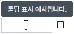
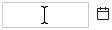
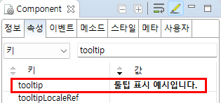

[InputCalendar] 컴포넌트에 마우스를 올릴 때 툴팁 표시하기
1개요
InputCalendar의 'tooltip' 속성을 사용하여 툴팁 메시지를 설정한 예제입니다. 이 속성에 문자열이 설정되면 컴포넌트에 마우스를 올릴 때 설정 값이 툴팁으로 표시됩니다.
2구현된 기능
마우스 오버 시 툴팁 표시하기
마우스 오버 시 툴팁 표시하지 않기
2.1마우스 오버 시 툴팁 표시하기
예제 영역 '마우스 오버 시 툴팁 표시하기'에 구성된 InputCalendar에서 테스트합니다.1
STEP 1: InputCalendar에 마우스를 올립니다.
Image 1.브라우저(Chrome) 실행 예시

2
STEP 2: 실행된 결과를 확인합니다.
툴팁으로 '툴팁 표시 예시입니다.'가 표시됩니다.
Image 2.브라우저(Chrome) 실행 예시

3예제 테스트 방법
3.1마우스 오버 시 툴팁 표시하지 않기
예제 영역 '(기본 설정) 마우스 오버 시 툴팁 표시하지 않기'에 구성된 InputCalendar에서 테스트합니다.1
STEP 1: InputCalendar에 마우스를 올립니다.
Image 3.브라우저(Chrome) 실행 예시

2
STEP 2: 실행된 결과를 확인합니다.
툴팁이 표시되지 않습니다.
Image 4.브라우저(Chrome) 실행 예시

4구현 예시
4.1마우스 오버 시 툴팁 표시하기
1
InputCalendar의 속성을 정의합니다.
[필수] tooltip="메시지"
예시) tooltip="툴팁 표시 예시입니다."
Image 5.웹스퀘어 스튜디오의 Component View - 속성 설정 예시

Example 1.Source
<!-- inputCalendar 의 소스 본문 예시 --> <w2:inputCalendar tooltip="툴팁 표시 예시입니다."> </w2:inputCalendar>
5주요 API
tooltip